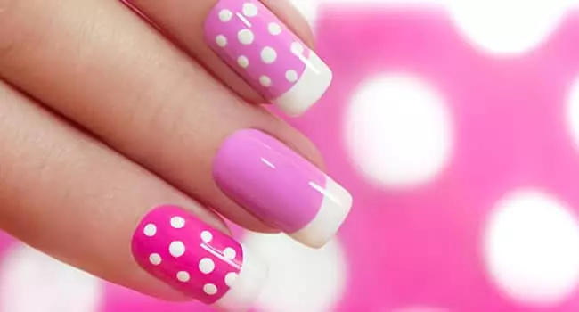
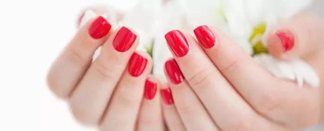

UÑAS GELIFICADAS

Un tratamiento correcto de manicura permite mantener cuidadas las manos y uñas y mejorar el aspecto general de cada persona.
UÑAS ESCULPIDAS

Uñas esculpidas en gel
Es uno de los materiales que utilizamos en Palermo y le da más naturalidad a la uña y se utiliza un gel especial para la construcción de la misma.
Uñas esculpidas en acrilico
Si bien el resultado no es tan natural como el caso anterior, esta técnica en Palermo te da un acabado más resistente y duradero.
Uñas en carbono
La construcción de este tipo en Palermo se hace con fibra de carbono lo que genera brillo extra y además su secado es más rápido y permite decorarla con mayor rapidez.
UÑAS ACCRILICAS

El esmaltado semipermanente es una técnica que mantiene las uñas perfectamente pintadas hasta dos semanas ininterrumpidas.